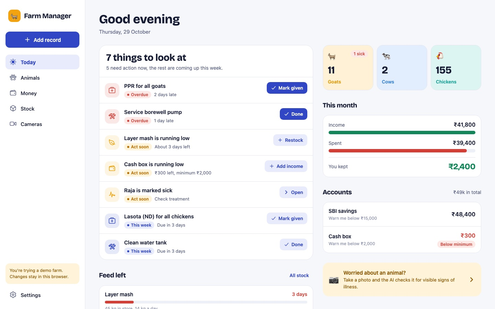
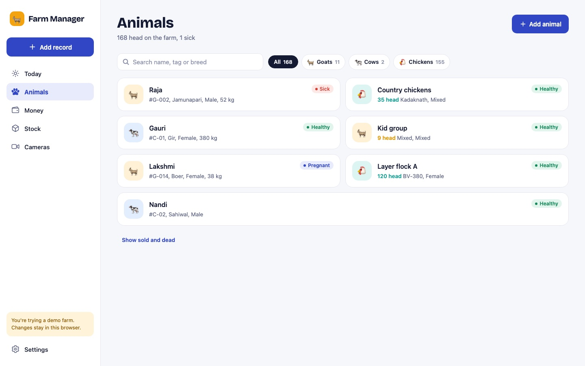
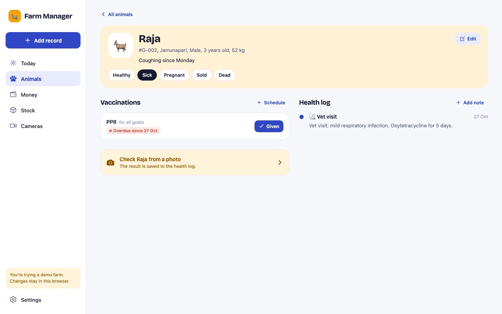
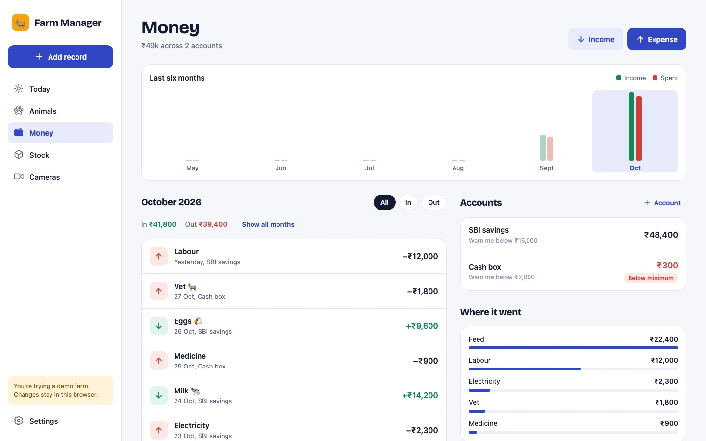
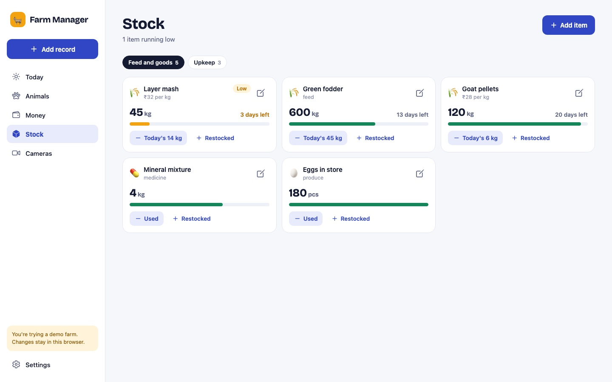

Screens from the app, on a phone and on a laptop
Captured from the running Expo build with the sample farm, at phone size and at laptop size. The same code builds the iPhone, Android and web apps.
On a phone


On a laptop




